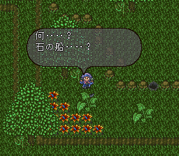

- 콤룬의 특징
- 이벤트 일람
- 돌의 배를 찾아서
- 콤룬 화산 분화를 저지 (콤룬 정복)
- 화산 대폭발의 위기!
콤룬의 특징
간바랜드에서 해협을 돌파해서 오거나, 사라매트의 정기선으로 츠키지마에 올 수 있다.
간바랜드와 마찬가지로 시간(연대)에 신경을 쓰면서 공략해야 한다. 무엇인가 놓치면 콤룬 화산이 분화해버린다.
또한 분화를 막지 않고 콤룬 해머(コムルーンハンマ)를 얻고 나서 츠키지마에 가면 분화해버려서 무인도가 돼버린다.
이벤트 일람
돌의 배를 찾아서
돌의 배의 정보
마을 사람들과 대화해서 '콤룬 화산', '제미오'와 '마도사의 성채'에 대한 정보를 듣자. 이후 제미오로 간다.
제미오에 있는 사라만다와 대화하면 "돌로 만든 배"를 가져오라고 한다. 다시 츠키지마로 간다.
츠키지마의 술집의 청년과 대화하면 돌의 배에 대한 정보를 얻을 수 있다. 이후 사라매트의 무리에로 간다.
돌의 배를 찾아서 정글로...
무리에 서쪽으로 가면 정글이 나온다. 여기서 남쪽으로 가다가 동쪽의 좁은 길로 가면 아마조네스의 마을 방면이 나온다. 만일 아마조네스 관련 이벤트를 아직 하지 않았을 경우 이벤트가 발생한다. 자세한 내용은
사라매트를 참고하자. 동시 진행해도 상관 없다.

아마조네스 마을 입구 부근에 있는 풀숲에서 돌의 배를 찾을 수 있다. 돌의 배를 입수하면 이동속도가 매우 느려진다. 일단 돌의 배를 도구 화면의 쓰레기통에 넣어버리면 자동으로 아바론 성의 창고에 간다. 그러면 이동속도가 원래대로 돌아온다.
이후 대쉬로 뛰어넘었던 함정으로 빠진 다음 탈출 후 정글에서 무리에까지 돌아간다. 그 다음 아바론의 창고에서 돌의 배를 꺼낸 후 제미오까지 간다.
제미오의 사라만다에게 돌의 배를 전달해주면 사라만다의 마을을 배로 이동할 수 있게 된다.
콤룬 화산 분화를 저지 (콤룬 정복)
마도사의 성채
마도사의 성채 안에는 척 보기에도 사악해보이는 마도사가 있다. 돌의 배 이벤트를 클리어 전/후에 따라 대사와 선택사항이 약간 다르다.
결과적으로 협력한다(協力する)를 선택해서 아이스 시드(アイスシード)를 받아야 한다. 선택에 따라
마도사2(魔道士) 와 강제 전투를 할 수도 있다. 전투는 의미가 없으니 협력하는 방향으로 선택하자.
콤룬 화산
이
제 화산에 올라간다. 콤룬 화산은 분화가 가까워지면 몬스터가 출현한다. 길이 좁으니 조심하면서 정상까지 올라간 후 아이스 시드를 사용해서 용암을 굳힌다. 이후 마도사를 찾아가면 츠키지마 촌장에게 보고하러 간다. 그리고 콤룬 지방이 제국의 영토가 된다.
화산 대폭발의 위기!
보상(마도사의 성채) : 16만 크라운, 24만 크라운, リバティスタッフ
용암 굳히기를 안해도 어느 정도 연대가 경과하면 발생한다. 아바론의 참모로부터 대폭발에 관한 정보를 듣지 않아도 이벤트가 시작된다. 다른 이벤트는 일단 무시하고 여기부터 진행하는 것이 좋다.
마도사의 성채에 가보면 아무도 없다. 사실 비밀 통로가 있는데 힌트는 바로 복도의 석상. 석상 사이를 ↓아래 방향으로 지나가면 구조가 바뀐다. 옥상에 있는 탑으로 들어가면 계단이 있는데 무한 회랑이다. 이번에도 비밀 통로를 찾아야 한다. 아래쪽 가운데 벽에 비밀 통로가 있고 계단으로 올라가면 마도사와 만날 수 있다. 마도사에게 말을 걸어도 잠을 자고 있다는 메시지뿐. 밖으로 나와서 제미오의 사라만다 족장을 만나자. 족장은 황제에게 피난 권고를 한다. 츠키지마 촌장을 만나 황제의 명으로 피난을 실시하고 다시 사라만다 족장을 만나면 선택사항이 뜬다.
- 화산에 간다(爆発を防ぐため火山に行く)
- 돌아간다(そのまま帰る)
로마 사가2 최대의 선택사항. 1번을 선택하면 사라만다를 동료로 할 수 있고, 2번을 선택하면 명술을 입수할 수 있다.
"화산에 간다" 루트 - 사라만다를 동료로...
이 루트로 선택했을 때 다른 지역에 가면 "돌아간다" 루트로 변경된다.
족장이 준 콤룬 해머(コムルーンハンマ)를 가지고 콤룬 화산 정상까지 올라간다. 도중에 전투를 하면서 콤룬 해머의 무기 기술(グランドバスター)을 번뜩이는 것이 좋다.
정상에서
바위(岩) 와 전투!
보스는 바위 + 짐승계 몬스터(헬 하운드)로 구성되어 있다. 자코는 쓰러뜨려도 일정 턴이 지나면 부활하며, 바위는 방어력이 매우 높다. 콤룬 해머로 번뜩인 '그랜드 버스터' 기술이 있으면 약간 편해진다. 추가로 매턴 일정 데미지를 받는다. 바위를 격파하면 용암이 흘러서 전체 데미지를 받으니까 HP를 미리 회복해놓자.
바위를 쓰러뜨리면 화산이 다시 멈춘다. 제미오에서 족장과 대화하면 사라만다 영입이 가능해진다.
"돌아간다" 루트 - 고대의 마술서
보상(부상도) : 重水の槍, セージロッド, 宵闇のローブ, 20만 크라운
츠키지마 주민 대피 이후 제미오 족장과 대화로 화산에 간다를 선택하지 않고, 츠키지마에 가보면 대폭발이 일어난다.
결국 콤룬 섬은 무인도가 된다. 지방 맵으로 나와보면 여기서만 출현하는 부상도(浮上島)가 출현한다.
부상도 최심부에 제단을 지키고 있는 좀비계? 중간 보스를 쓰러뜨리면 마도사가 나타난다. 마도사는 자기 입으로 모든 일을 폭로한다. 여기서 선택사항이 뜬다.
첫 번째를 선택하면
마도사1(魔道士)과 곧바로 전투를 한다. 두 번째를 선택하면 마도사가 보상에서 무언가 가져가며, 황제는 남은 아이템을 가져갈 수 있다.
이 루트의 목적은 명술을 얻는 것이니 반드시 마도사와 전투를 하는 선택으로 가자.
마도사는 스턴에 대한 내성이 없으니 스턴 기술로 행동을 차단하면서 싸우면 된다.
마도사를 쓰러뜨리면 황제는 콤룬 섬에 대한 책임을 지고 퇴위한다.(강제 황제 계승...) 다시 부상도의 제단으로 가보면 고대 마술서(古代魔術書)와 다른 아이템들도 같이 입수한다.
고대 마술서를 가지고 술법 연구소의 프리 메이지나 궁정 마술사에게 보여주고 연구를 허락하면 명술 연구실이 생긴다. 이 연구실은 연구소내에 있는 것이 아니라 연구소 우측 숲길을 통과하면 갈 수 있다.